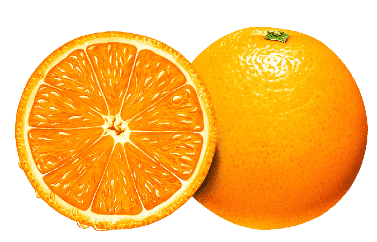

tentangbuah.com
Jeruk

Jeruk (bahasa Inggris: orange) adalah buah dari berbagai spesies citrus dalam famili Rutaceae terutama mengacu pada Citrus × sinesis,
yang juga disebut jeruk manis, untuk membedakannya dari Citrus x aurantium terkait, yang disebut jeruk pahit. Jeruk manis bereproduksi secara aseksual
(apomiksis melalui nucellar embryony) varietas jeruk manis muncul melalui mutasi.
Jeruk berasal dari wilayah yang meliputi Tiongkok Selatan, India Timur Laut, dan Myanmar, dan penyebutan jeruk manis paling awal adalah dalam literatur Tiongkok pada 314 SM.
Hingga 1987, pohon jeruk ditemukan sebagai pohon buah yang paling banyak dibudidayakan di dunia. Pohon jeruk banyak ditanam di iklim tropis dan subtropis untuk buahnya yang
manis. Buah jeruk dapat dimakan segar, atau diolah untuk jus atau kulitnya yang harum. Hingga 2012, jeruk manis menyumbang sekitar 70% dari produksi citrus.
Jeruk adalah hibrida antara jeruk bali (Citrus maxima) dan mandarin (Citrus reticulata). Genom kloroplas, dan karena itu garis ibu,
adalah jeruk bali.[7] Jeruk manis telah memiliki genom lengkap yang diurutkan. Pada 2019, 79 juta ton jeruk ditanam di seluruh dunia, dengan Brasil memproduksi 22% dari total, diikuti oleh Tiongkok dan India.
Source : Wikipedia.com
Khasiat Jeruk
- Melancarkan Pencernaan. Sumber serat yang sangat baik larut dan tidak larut ada pada jeruk
- Mengatur Tekanan Darah Tinggi
- Mencegah Kanker
- Baik untuk jantung
- Meningkatkan Kekebalan Tubuh
- Memurnikan Darah
- Memperkuat Tulang
Daftar Harga
| Jenis Jeruk | Harga | |
|---|---|---|
| Per Kilo | Per BIji | |
| Jeruk Santang | 12.500 | 1.250 |
| Jeruk Siam Bali | 14.500 | 1.450 |
| Jeruk Medan | 20.000 | 2.000 |
| Jeruk CIna | 30.000 | 3.000 |